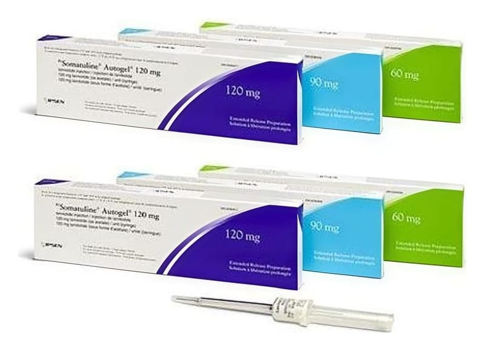

Somatuline Autogel 60 mg/0,5 ml Uzatılmış Salımlı Enjeksiyonluk Çözelti İçeren Kullanıma Hazır Şırınga, 1 Adet

Ne için kullanılır
KT · Bölüm 1SOMATULINE AUTOGEL, lanreotid adlı etkin maddeyi içeren ve derin deri altına (subkütan) uygulanan, otomatik güvenlik sistemli kullanıma hazır şırınga içerisinde enjeksiyonluk koyu kıvama sahip bir çözeltidir. Beyaz ila soluk sarı, viskoz ve aşırı doymuş bir çözeltidir.
Ürün, SOMATULINE’in uzun süreli etki gösteren bir formülasyonudur.
Her kullanıma hazır şırınga, özel laminatlı ambalajı içerisinde ve karton kutuda bulunmaktadır. Her kutu, otomatik güvenlik sistemli kullanıma hazır şırınga ve şırıngaya takılı bir iğne içermektedir. Bu ilacı kullanmaya başlamadan önce bu KULLANMA TALİMATINI dikkatlice okuyunuz, çünkü sizin için çok önemli bilgiler içermektedir. • Bu kullanma talimatını saklayınız. Daha sonra tekrar okumaya ihtiyaç duyabilirsiniz. • Eğer ilave sorularınız olursa, lütfen doktorunuza veya eczacınıza danışınız. • Bu ilaç kişisel olarak sizin için reçete edilmiştir, başkalarına vermeyiniz. • Bu ilacın kullanımı sırasında, doktora veya hastaneye gittiğinizde bu ilacı kullandığınızı doktorunuza söyleyiniz. • Bu talimatta yazılanlara aynen uyunuz. İlaç hakkında size önerilen dozun dışında yüksek veya düşük doz kullanmayınız.
Bu ilaç etkin madde olarak lanreotid ve yardımcı madde olarak enjeksiyonluk su ve glasiyal asetik asit içerir. Lanreotid, “büyüme hormonu antagonistleri” olarak bilinen bir ilaç grubuna dahildir. “Somatostatin” adı verilen bir diğer hormona benzerlik gösterir.
Lanreotid, hormonların vücutta salgılanmasını azaltır (örneğin GH; büyüme hormonu ve IGF-1; insülin-benzeri büyüme faktörü 1) ve gastrointestinal (mide ve bağırsağa ilişkin) sistemdeki bazı hormonların salıverilmesini ve bağırsak salgılarını inhibe eder. Ayrıca, bağırsak ve pankreastaki birtakım ileri dereceli tümörler (nöroendokrin tümörleri) üzerinde de büyümeyi durdurma veya geciktirme etkisi bulunmaktadır.
SOMATULINE AUTOGEL: • Akromegali hastalığının (vücudun çok fazla büyüme hormonu üretmesi durumu) tedavisinde, • Nöroendokrin tümörleri bulunan hastalarda oluşabilen, kızarma ve diyare (ishal) gibi belirtilerin rahatlatılmasında, • Bağırsak ve pankreastaki bazı ilerlemiş tümörlerin (gastroenteropankreatik nöroendokrin tümörleri veya kısaca GEP-NETler) büyümelerinin kontrolünde ve tedavisinde kullanılır. Bu ürün, tümörlerin ameliyat ile alınamadığı durumlarda kullanılır. 2. SOMATULINE AUTOGEL’i kullanmadan önce dikkat edilmesi gerekenler: SOMATULINE AUTOGEL’i aşağıdaki durumlarda KULLANMAYINIZ Eğer lanreotide, somatostatin veya aynı aileden ilaçlara (somatostatin analogları) ya da SOMATULINE AUTOGEL’in içerdiği diğer yardımcı maddelere karşı alerjik (aşırı duyarlı) iseniz (yardımcı maddeler listesine bakınız) kullanmayınız.
SOMATULINE AUTOGEL’i aşağıdaki durumlarda DİKKATLİ KULLANINIZ • Eğer şeker (diyabet) hastasıysanız, lanreotid kandaki şeker seviyesini etkileyebilir. SOMATULINE AUTOGEL ile tedavi sırasında doktorunuz kan şekeri seviyelerini kontrol ederek anti-diyabetik (diyabet karşıtı) tedavinizi değiştirmeyi gerekli görebilir. • Eğer safra kesenizde taş oluşumu varsa, lanreotid safra kesesi taşlarına sebep olabileceğinden, SOMATULINE AUTOGEL ile tedavi süresince düzenli olarak kontrol edilmeniz gerekebilir. Eğer safra kesesi taşlarının oluşumundan kaynaklı komplikasyonlar gözlenirse, doktorunuz tedaviyi sonlandırmaya karar verebilir. • Eğer tiroid problemleriniz varsa, SOMATULINE AUTOGEL tiroid fonksiyonlarınızı hafif düzeyde düşürebilir. • Eğer kalbinizle ilgili problemleriniz varsa, SOMATULINE AUTOGEL ile tedavi sırasında sinüs bradikardisi (kalp atışında yavaşlama) gerçekleşebilir. Bradikardisi olan hastalarda SOMATULINE AUTOGEL ile tedaviye başlarken özellikle dikkatli olunmalıdır.
Bu uyarılar, geçmişteki herhangi bir dönemde dahi olsa sizin için geçerliyse lütfen doktorunuza danışınız.
• Lanreotid gıda sindiriminde rol oynayan pankreatik enzimlerin salgılanmasını etkileyebileceğinden, tedavi sırasında yağlı dışkı, gevşek dışkı, karında şişkinlik veya kilo kaybınız varsa doktorunuzla veya eczacınızla konuşunuz.
SOMATULINE AUTOGEL’in yiyecek ve içecek ile kullanılması: Uygulama yöntemi açısından yiyecek ve içeceklerle etkileşimi yoktur.
Hamilelik İlacı kullanmadan önce doktorunuza veya eczacınıza danışınız.
Hamileyseniz veya hamile olduğunuzu düşünüyorsanız derhal doktorunuza bildiriniz. Hamilelik durumunda SOMATULINE AUTOGEL yalnızca, kesinlikle ihtiyaç duyulan durumlarda verilmelidir. Gerekli olmadıkça hamilelik döneminde kullanılmamalıdır. Tedaviniz sırasında hamile olduğunuzu fark ederseniz hemen doktorunuza veya eczacınıza danışınız.
Emzirme İlacı kullanmadan önce doktorunuza veya eczacınıza danışınız.
Eğer bebeğinizi emziriyorsanız, SOMATULINE AUTOGEL yalnızca, kesinlikle ihtiyaç duyulan durumlarda verilmelidir. Gerekli olmadıkça emzirme döneminde kullanılmamalıdır.
Araç ve makine kullanımı SOMATULINE AUTOGEL ile tedavinin, araç ve makine kullanma yeteneğiniz üzerinde etkisi bulunmamaktadır; fakat baş dönmesi gibi olası yan etkiler ortaya çıkabilir. Eğer buna benzer şikayetleriniz var ise araç ve makine kullanırken dikkatli olunuz.
SOMATULINE AUTOGEL’in içeriğinde bulunan bazı yardımcı maddeler hakkında önemli bilgiler Uyarı gerektiren yardımcı madde içermemektedir.
Diğer ilaçlar ile birlikte kullanımı Bazı ilaçlar diğer ilaçların etkisini değiştirebilir.
SOMATULINE AUTOGEL’in aşağıda belirtilen ilaçlarla birlikte kullanımı konusunda özellikle dikkatli olunmalıdır: • Siklosporin (organ nakillerinden sonra veya otoimmün (vücudun kendi hücrelerine karşı antikor oluşturma durumu) hastalıklar gibi durumlarda bağışıklık sisteminin oluşturacağı reaksiyonu baskılayan bir ilaç) • Bromokriptin (belirli tip beyin tümörleri ve Parkinson hastalığının tedavisinde ya da doğumu takiben emzirmenin önlenmesinde kullanılan dopamin benzeri bir ilaç) • Şeker hastalığı için kullanılan ilaçlar (örn. insulin, glitazonlar, repaglidin, sülfonilüreler) • Bradikardi oluşturan ilaçlar ( beta blokörler gibi kalp atışını yavaşlatan ilaçlar) • Kinidin (kalp ritim bozukluklarında kullanılan bir ilaç) ve terfenadin (alerjik solunum sistemi hastalıklarında kullanılan bir ilaç) gibi ilaçlar.
Buna benzer eş zamanlı tedavilerde doktorunuz bu ilaçların dozlarının düzenlenmesine gerek duyabilir. Eğer reçeteli ya da reçetesiz herhangi bir ilacı şu anda kullanıyorsanız veya son zamanlarda kullandınız ise lütfen doktorunuza veya eczacınıza bunlar hakkında bilgi veriniz.